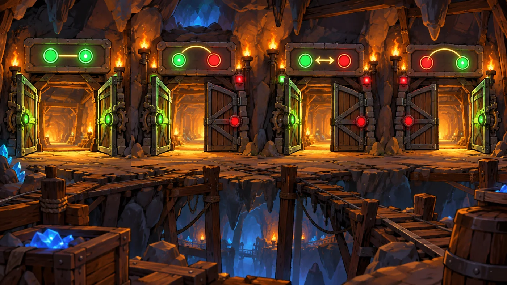

故事：矿坑的岔路口立着一块告示牌，上面写满了各种"真假组合"：
真真、真假、假真、假假……
过路人得算准每一条的结果，路才会亮起来。
贺舒曼在旁边说：别看这套组合表长得枯燥——
位运算里的"与、或、异或"，用的就是同一套表。
扣哒考级 · GESP PYTHON 三级 · 第 3 单元 | 符文矿坑 RUNEMARK MINE
光栅闸门 位运算
Bitwise Operations

贺舒曼
镜中先知 · 你的向导
矿道的尽头，横着一排古怪的光栅闸门。每一扇门上都亮着一串小灯，
有的亮、有的灭，排成整整齐齐的一行。
你伸手想推门，却被一道光拦住了。门上浮现出一行符文：
灯与灯之间，也要讲规矩。
贺舒曼提着灯走过来，在镜子里照出那排灯光：看清楚了——这次我们不是在看数字，是在看"每一位"。
你伸手想推门，却被一道光拦住了。门上浮现出一行符文：
灯与灯之间，也要讲规矩。
贺舒曼提着灯走过来，在镜子里照出那排灯光：看清楚了——这次我们不是在看数字，是在看"每一位"。
贺舒曼 · 镜中先知
前两个单元，我们学了负数怎么存、数字怎么写。这一单元要更进一步：把数字拆开，一位一位地动手术。
别怕，五个运算符而已，而且它们干活的方式特别"老实"——竖着对齐，一位一位地算。
assets/illustrations/py-L3-03-01_light_gate.webp
【配图位】矿道尽头一排由发光符文组成的光栅闸门：每一扇门上有八个灯位，亮灭组合各不相同；中央一扇门上并排显示两组灯光，中间浮现出 & | ^ 三个符号。
0 单元导语与目标
Unit Overview
0.1 学习目标
1学完这个单元，你将能……
- 说清位运算和普通运算的区别
- 手算二进制数的 &、|、^ 结果
- 理解 ~ 的结果为什么是"负数减一"
- 用 << 和 >> 快速做乘 2、除 2
- 用
n & 1判断奇偶 - 看懂"取出某一位/设置某一位"的写法
2对标 GESP 考纲（Python 三级）
- 掌握位运算：按位与、按位或、按位异或、按位取反、左移、右移
- 理解位运算的运算法则（逐位进行），掌握其运算结果的计算
- 了解位运算的常见应用：奇偶判断、快速乘除、位标记
- 考核目标：能准确计算位运算表达式的结果
0.2 考纲对照
| 本单元小节 | 对应考纲条目 | 真题常考形式 |
|---|---|---|
| 1 位运算是什么 | 位运算的基本概念 | 位运算与普通运算的区别 |
| 2 与、或、异或 | 逐位运算的法则 | 给两个数，问按位与 / 或 / 异或的结果 |
| 3 取反 | 按位取反 | 取反之后是多少；为什么是 -(n+1) |
| 4 左移与右移 | 移位运算 | 左移右移相当于乘除多少 |
| 5 实战用法 | 位运算的应用 | 判断奇偶、翻标志位、交换两个数 |
1 位运算是什么
What Is Bitwise
1.1 普通运算 vs 位运算
平时我们算 3 + 5，是把它当成一个完整的数字来算。
而位运算不一样：它把数字拆成一个个二进制位，每一位单独处理，互不进位。
图 2（SVG）：普通运算会进位，位运算不会
1.2 五个位运算符
打个比方：
普通的加减乘除，是把整个数当成一个整体来算的；
而位运算是把数拆成一位一位，每一位单独算，算完再拼回去。
就像一排八盏灯：普通运算看的是"整排灯总共有多少瓦"， 位运算看的是"第几盏灯是亮着的"。
所以位运算最关键的一点是：不做进位。
而位运算是把数拆成一位一位，每一位单独算，算完再拼回去。
就像一排八盏灯：普通运算看的是"整排灯总共有多少瓦"， 位运算看的是"第几盏灯是亮着的"。
所以位运算最关键的一点是：不做进位。
五个运算符（Python 写法）：
& 按位与 | 按位或 ^ 按位异或 ~ 按位取反 << 左移 >> 右移
它们的共同点：先把两个数写成二进制，再一位一位地对齐着算。
它们的共同点：先把两个数写成二进制，再一位一位地对齐着算。
2 与、或、异或
& | ^
2.1 三种逐位运算的法则
图 3（SVG）：三种逐位运算的法则与例子
| 运算符 | 名称 | 运算规则 | 一句话记忆 |
|---|---|---|---|
& | 按位与 | 两位都是 1 才得 1 | 两个都同意才通过 |
| | 按位或 | 两位有一个是 1 就得 1 | 有一个同意就通过 |
^ | 按位异或 | 两位不同才得 1，相同得 0 | 意见不同才有分歧 |
在 Python 里直接算
Python
print(6 & 7) # 0110 & 0111 = 0110 → 6
print(6 | 7) # 0110 | 0111 = 0111 → 7
print(6 ^ 7) # 0110 ^ 0111 = 0001 → 1
# 几个好用的特殊值
print(n & 0) # 和 0 相与，结果永远是 0
print(n | 0) # 和 0 相或，结果永远是 n
print(n ^ 0) # 和 0 异或，结果永远是 n
print(n ^ n) # 和自己异或，结果永远是 0OUTPUT 6
7
1
7
1
2.2 异或的妙用

assets/illustrations/py-L3-03-02_gate_logic.webp
【配图位】矿道里四组并排的双闸门，每组上方标着运算符：第一组两道门都开、灯亮（与）；第二组一开一关、灯仍亮（或）；第三组两道门都关、灯全暗（非）；第四组一开一关、但灯只亮一盏（异或，恰好一个才亮）；一名矿工在每组前拉动拉杆，扣哒鸭站在第一组门上往下看。
异或有个很妙的性质：
所以异或常被用来做"加密/解密"——用同一个密钥异或两次，原文就回来了。
a ^ b ^ b == a。
一个数连着异或同一个数两次，就回到原样。所以异或常被用来做"加密/解密"——用同一个密钥异或两次，原文就回来了。

服部半藏 · 赤影武士
我们忍者过哨卡要报暗号，两个哨兵各问一句：第一句问"有口令吗"，第二句问"有印记吗"。
两句都过关才放行——那就是与；
任一句过关就能进——那就是或；
两个人给的答案不一样，反倒说明有蹊跷——那就是异或。
3 取反 ~
Bitwise NOT
3.1 取反的规则
取反最简单：把每一位都反过来——0 变 1，1 变 0。
但这里有个坑：在 Python 里，~5 的结果不是简单的"五位全翻"，
因为它涉及到我们第一单元学的补码。
记住这个公式就够了：
~n = -(n + 1)
例：
例：
~5 = -6、~0 = -1、~(-1) = 0。
取反的结果
Python
print(~5) # -(5+1) = -6
print(~0) # -(0+1) = -1
print(~(-1)) # -(-1+1) = 0
print(~6) # -7OUTPUT -6
-1
0
-7
-1
0
-7
3.2 为什么结果是 -(n+1)
打个比方：
取反就像照镜子——把每一位都翻成反面。
但镜子里的世界和现实是"对不上"的，因为 Python 里的负数用的是补码表示：
一个数取反之后，正好等于"它的相反数再减 1"，也就是
别去死记，只要记住"取反 ≠ 取相反数"就不会错。
但镜子里的世界和现实是"对不上"的，因为 Python 里的负数用的是补码表示：
一个数取反之后，正好等于"它的相反数再减 1"，也就是
-(n+1)。别去死记，只要记住"取反 ≠ 取相反数"就不会错。
为什么是 -(n+1)？
用 8 位补码看就明白了：
而这个补码对应的真值是
取反 = 对整个补码取反，结果自然还是补码。
5 是 0000 0101，
逐位取反得到 1111 1010。而这个补码对应的真值是
-6（因为 -6 的补码正是
1111 1010）。取反 = 对整个补码取反，结果自然还是补码。
4 左移与右移
<< & >>
4.1 左移 << 就是乘 2
移位就更好理解了：把整串二进制位整体挪动若干格，空出来的位置补上。
图 5（SVG）：左移放大、右移缩小，都是 2 的整数倍
移位的例子
Python
print(5 << 1) # 5 × 2 = 10
print(5 << 2) # 5 × 4 = 20
print(5 << 3) # 5 × 8 = 40
print(5 >> 1) # 5 // 2 = 2
print(5 >> 2) # 5 // 4 = 1
print(8 >> 3) # 8 // 8 = 1
print(1 << 10) # 1 × 1024 = 1024OUTPUT 10 20 40 2 1 1 1024
4.2 右移 >> 就是整除 2
assets/illustrations/py-L3-03-03_shift_lane.webp
【配图位】矿壁上挂着一条由八盏小灯组成的灯带，下方是一块刻着数字 1、2、4、8…的尺子；一支发光的长杆正在把整条灯带向左推一格，最右端空出的一格标记着"补 0"的小灯；尺子上对应的数字随之整体翻倍；一名矿工扶着长杆，另一侧还画着向右推的虚线示意。
小技巧：
想快速算出 2 的 n 次方？直接写
1 << n。1 << 10 = 1024、1 << 20 = 1048576——
比按计算器还快，而且这正是"存储容量为什么是 1024"的由来。
5 位运算的实战用法
Practical Tricks
5.1 四个常见用途
| 想干什么 | 怎么写 | 为什么 |
|---|---|---|
| 判断是不是偶数 | n & 1 == 0 | 最低位是 0 就是偶数 |
| 判断是不是奇数 | n & 1 == 1 | 最低位是 1 就是奇数 |
| 乘 2 的 k 次方 | n << k | 比 n * 2**k 更快 |
| 整除 2 的 k 次方 | n >> k | 比 n // 2**k 更快 |
| 把第 k 位变成 1 | n | (1 << k) | 用"或"强行点亮那一位 |
| 把第 k 位变成 0 | n & ~(1 << k) | 先用取反做出一张"除它之外全 1"的掩码 |
| 取出第 k 位的值 | (n >> k) & 1 | 先移到最低位，再与 1 相与 |
判断奇偶：两种写法的对比
Python
n = 7
# 常规写法
if n % 2 == 1:
print("奇数")
# 位运算写法（结果完全一样）
if n & 1 == 1:
print("奇数")要点 只看最低位就够了——
n & 1 就是它的最低位
艾达 · 冰霜法师
我配药时有个习惯：每种配料对应一盏灯，放了就点亮。想知道"有没有放月光草"？不用一样样翻，只要看一眼第三盏灯亮不亮。
把第 k 位变成 1、变成 0、或者取出来看——这就是位运算在真实程序里最常用的三个动作， 它们合起来叫"位标记"。
5.2 用位运算解决的问题
6 代码实战
Level Practice
关卡
逻辑之路
进入关卡 →思路：把每个逻辑运算的结果算清楚。
True 的那几种就够了。

assets/stages/py-L3-03-stage1_logic_road.webp
【关卡截图位】请把《逻辑之路》的游戏画面截图放到此处（放入 assets/stages/ 目录，文件名为 py-L3-03-stage1_logic_road.webp）。
重点示例：四种组合的答案
Python
a = True and True # True ← 都真才真
b = True and False # False
c = False and True # False
d = False and False # False要点 注意大小写：
and 是小写，True / False 首字母大写
和位运算对照着看：
一个是"条件的真假"，一个是"某一位的 0/1"，规则表却是同一张。
去扣哒世界闯这一关 →
True and False ←→ 1 & 0，结果都是"假/0"；True or False ←→ 1 | 0，结果都是"真/1"。一个是"条件的真假"，一个是"某一位的 0/1"，规则表却是同一张。
7 常见陷阱
Common Pitfalls

扣哒鸭 · 调试官
位运算的坑很集中，都是"少看一眼"造成的。四条，看完你就稳了。
1
把
& 当成了 and，
把 | 当成了 or。
扣哒鸭：它们是两家人！
虽然规则长得像，但一个是按位算，一个是按真假算。
&、|、^、~ 是位运算；
and、or、not 是逻辑运算。虽然规则长得像，但一个是按位算，一个是按真假算。
正确理解：
& 是"按位与"，and 是"逻辑与"2
算
~5 时直接写出 2。以为五位取反是 01010。
扣哒鸭：Python 的整数位数是不定的，
不能用"五位取反"去理解。别算了，直接套公式：
~n = -(n+1)，
所以 ~5 = -6。正确公式：~n = -(n + 1)
3
以为
^ 是"次方"。写成 2 ^ 3 想要 8。
扣哒鸭：这是最多人踩的坑！在 Python 里次方要用
**：2 ** 3 才是 8；而 2 ^ 3 是按位异或，
结果是 01 ^ 11 = 01，等于 1。正确写法：次方用
2 ** 3；^ 只做异或4
左右移搞反了。以为
5 >> 1 是 10。
扣哒鸭：看箭头的方向！
记不住就想：往左站一位，位权变大，数就变大。
<< 箭头往左，数字变大（乘 2）；
>> 箭头往右，数字变小（除 2）。记不住就想：往左站一位，位权变大，数就变大。
正确理解：
n << k = n × 2k；n >> k = n // 2k8 题目练习
Practice
第 1 题改编自 2026 年 9 月 · Python 三级 第 5 题，其余为原创练习题。
改编自 2026 年 9 月 · Python 三级 · 第 5 题单选题
在 Python 中，表达式
~5 + 1 的结果是（ ）。A.−5 B.6 C.−6 D.4
查看答案与详解
答案：A。位运算取反的公式是
为什么取反等于"取负再减一"？看 4 位补码：5 是
配套结论：
对应小节3 取反 ~。
~n = −(n + 1)：~5 = −(5 + 1) = −6，再加 1 就得到 −5。为什么取反等于"取负再减一"？看 4 位补码：5 是
0101，逐位取反得 1010，而 1010 正是补码里的 −6。配套结论：
~n + 1 = −n，所以"取反再加一"就是求相反数的常用技巧。对应小节3 取反 ~。
原创练习题单选题
表达式
12 & 10 的值是（ ）。A.6 B.8 C.14 D.120
查看答案与详解
答案：B。写成四位二进制再逐位相与：
易错点：C 项 14 是按"或"算的（1100 | 1010 = 1110 = 14），别混。
对应小节2 与、或、异或。
12 = 1100，10 = 10101100 & 1010 = 1000，也就是 8。易错点：C 项 14 是按"或"算的（1100 | 1010 = 1110 = 14），别混。
对应小节2 与、或、异或。
原创练习题单选题
表达式
12 ^ 10 的值是（ ）。A.2 B.6 C.8 D.22
查看答案与详解
答案：B。
1^1=0、1^0=1、0^1=1、0^0=0 →
记忆：异或是"不同为 1，相同为 0"。
对应小节2 与、或、异或。
1100 ^ 1010，
逐位比较"是否不同"：1^1=0、1^0=1、0^1=1、0^0=0 →
0110 = 6。记忆：异或是"不同为 1，相同为 0"。
对应小节2 与、或、异或。
原创练习题单选题
表达式
3 << 4 的值是（ ）。A.12 B.34 C.48 D.81
查看答案与详解
答案：C。左移 k 位等于乘 2 的 k 次方：
易错点：B 项是把"移位"当成了"拼接数字"，这是概念性错误。
对应小节4 左移与右移。
3 × 2⁴ = 3 × 16 = 48。易错点：B 项是把"移位"当成了"拼接数字"，这是概念性错误。
对应小节4 左移与右移。
原创练习题单选题
执行
print(~7) 后，输出的结果是（ ）。A.7 B.-7 C.8 D.-8
查看答案与详解
答案：D。套公式
提示：这个公式一定要背下来，考试里凡是出现
对应小节3 取反 ~。
~n = -(n+1)：
~7 = -(7+1) = -8。提示：这个公式一定要背下来，考试里凡是出现
~ 基本都是套它。对应小节3 取反 ~。
原创练习题判断题
判断一个整数 n 是否为奇数，可以用表达式
n & 1 == 1。（ ）查看答案与详解
答案：正确（√）。二进制的最低位决定了奇偶性：
最低位是 1 就是奇数，是 0 就是偶数。
对应小节5 位运算的实战用法。
n & 1 恰好只保留最低位。它和
n % 2 == 1 的结果完全一致。对应小节5 位运算的实战用法。
原创练习题单选题
下列 Python 代码执行后，输出的结果是（ ）。
1 a = 5 2 b = 3 3 print(a & b, a | b, a ^ b)
A.1 7 6 B.1 6 7 C.7 1 6 D.5 3 2
查看答案与详解
答案：A。
对应小节2 与、或、异或。
5 = 101，3 = 011：101 & 011 = 001 = 1（按位与）101 | 011 = 111 = 7（按位或）101 ^ 011 = 110 = 6（按位异或）对应小节2 与、或、异或。
原创练习题编程题
题目要求：编写程序，输入两个正整数 a 和 b，输出：
① 它们的按位与；② 按位或；③ 按位异或；④ a 左移 2 位的结果。每项一行。
查看参考答案与要点
a = int(input("请输入第一个数："))
b = int(input("请输入第二个数："))
print(a & b) # 按位与
print(a | b) # 按位或
print(a ^ b) # 按位异或
print(a << 2) # 左移 2 位，等于 a × 4
运行示例：输入 5 和 3 → 输出 1、7、6、20。
要点：
① 三个位运算符直接写在两个变量中间即可；
② 左移 2 位等于乘 4，所以 5 的结果是 20；
③ 如果题目要求"用位运算判断奇偶"，就写 a & 1。
对应小节2 与、或、异或；4 左移与右移。
9 本单元小结
Unit Summary
贺舒曼 · 镜中先知
位运算不难，难在"记混"。给你三句口诀收尾：一、与要都到场，或来一个就行，异或专挑不同意见。
二、取反就记 ~n = -(n+1)。
三、左移变大乘 2，右移变小除 2。
剩下那个最好用的
n & 1——判断奇偶，一辈子都用得上。
你在光栅闸门前收获了什么
- 位运算的特点——把数字拆成二进制位，逐位独立运算，不进位、不借位。
- 按位与 &——两位都是 1 才得 1；常用来"取出某几位"。
- 按位或 |——有一位是 1 就得 1；常用来"强行点亮某一位"。
- 按位异或 ^——不同为 1，相同为 0；
a ^ a = 0，可用于加密。 - 按位取反 ~——~n = -(n+1)，这是必背公式。
- 左移 <<——
n << k = n × 2k；1 << n就是 2 的 n 次方。 - 右移 >>——
n >> k = n // 2k，小数部分直接被挤掉。 - 实战用法——
n & 1判奇偶；n | (1 << k)设置第 k 位。
下一站：矿道图纸
矿工们修路之前，会先在羊皮纸上画一张图：从哪儿开始、经过哪儿、到哪儿结束。 那张图里没有一行代码，可它就是算法。下一单元，我们学怎么把想法说清楚。
加入扣哒世界，把这条考纲之路走一遍 →